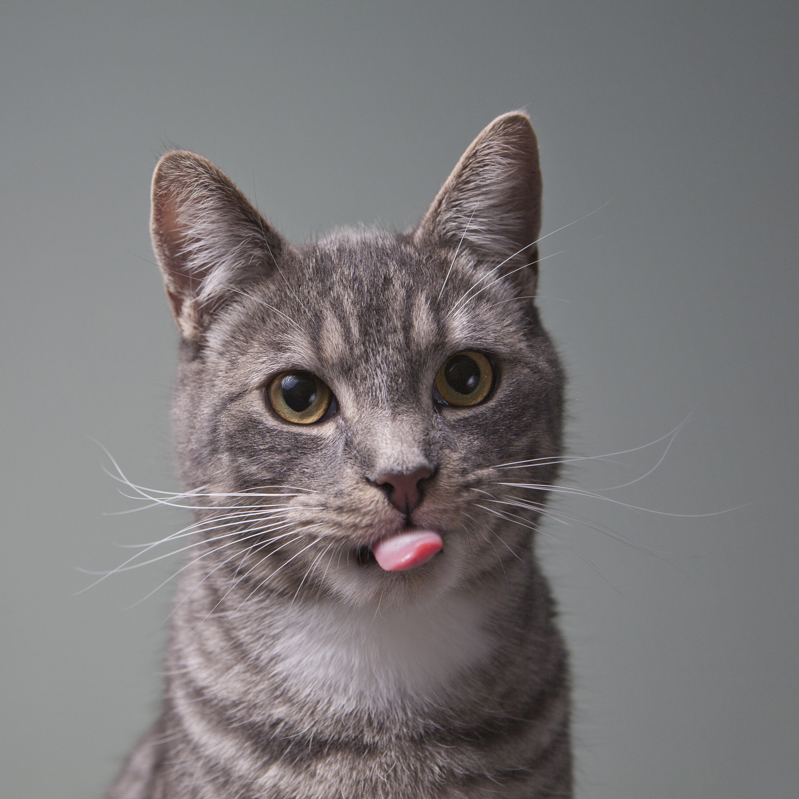
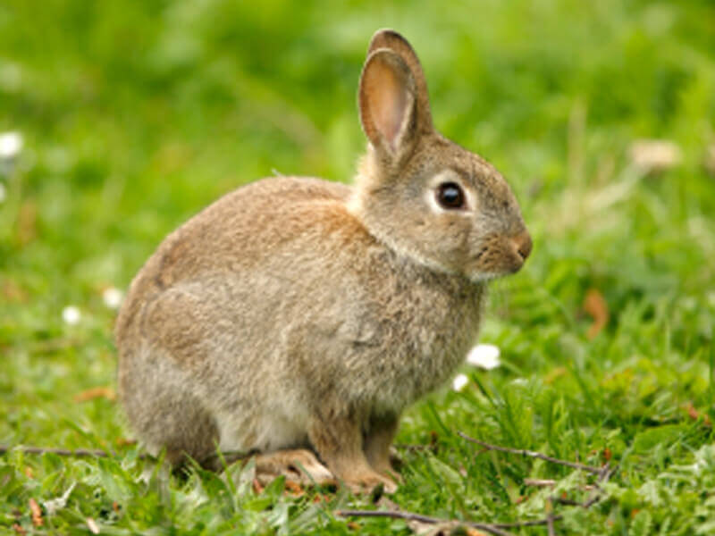

01 / 03
LOYAL HEARTS, BIG ADVENTURES
Dog people, this way.
For long walks, warm welcomes, and someone who always thinks you're pretty great.
✳ A LITTLE LOVE GOES A LONG WAY
The couch cuddler. The adventure buddy. The tiny troublemaker. Somewhere out there, your kind of companion is waiting to meet you.
Every great friendship
starts with a hello.
Meet someone
worth coming home to.
A few details, and we'll help you take the next step.
↗ Search results now appear below. For more options, you can still browse Petfinder. Pet Picker is an independent guide, not an adoption agency.
A live preview of adoptable pets from shelters currently covered by our data partner.
About this preview: On-page U.S. listings currently come from selected shelters in King County, Washington and Montgomery County, Maryland. For broader U.S. coverage, use Petfinder. Always confirm availability with the shelter.
This on-page preview has limited U.S. shelter coverage. Petfinder can show more pets and rescues in your area.
Live listing information by Petnecto from participating shelters and public adoption sources. Shelter photos and details belong to their respective publishers; adoption is handled by the shelter.
Big personalities, tiny paws, and everything in between. Find a friend who fits your world.
LOYAL HEARTS, BIG ADVENTURES
For long walks, warm welcomes, and someone who always thinks you're pretty great.

02 / 03COZY DAYS, CURIOUS MINDS
For slow mornings, sunny windows, and a little extra character around the house.

03 / 03SMALL PAWS, MASSIVE CHARM
For gentle friendships, playful curiosity, and the magic in the small things.
Photography is illustrative. These are not individual animals currently listed for adoption.
Just a thoughtful first step toward finding your next companion.
Choose a pet type and add a few preferences to focus your search.
We'll take you to Petfinder to discover available pets and local rescues.
Connect with a shelter or rescue directly to learn about meeting and adoption.
Finding the right companion isn't about perfect. It's about that wonderful feeling of belonging.
Start your search